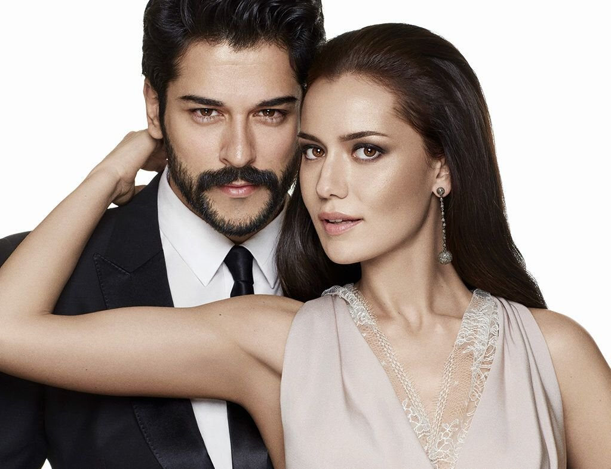

Личная Жизнь
Личная жизнь турецкого артиста не перестает интересовать мировую прессу. Довольно продолжительное
время Бурака связывали серьезные отношения с фотомоделью Джейлан Чапой, дочерью известного турецкого
журналиста. Но в конце 2014 года, после многолетнего романа, пара рассталась. Причиной стала неуемная ревность
подруги Озчивита, а также его все более уплотняющийся рабочий график. По слухам, Джейлан изводила актера подозрениями
в неверности и даже могла внезапно нагрянуть на съемочную площадку, где он работал, чтобы проверить собственные предположения.
В процессе съемки сериала «Королек — птичка певчая» Бурак познакомился с молодой Фахрие Эвджен. В тот период он еще встречался с Джейлан,
и девушка сразу удвоила бдительность, невзлюбив актрису главной роли.
Но тогда это знакомство ни к чему не привело, зато в 2015 году, во время работы над мелодрамой «Любовь похожа на тебя», между молодыми людьми
вспыхнула искра. Еще после того, как актер сам пригласил Фахрие на главную роль в этом фильме (Бурак также выступил продюсером картины), Джейлан \
Чапа заявила, что уходит от Озчивита. Ему осталось только смириться и окунуться в новые отношения.

По слухам, Фахрие Эвджен отличается капризным характером.
Но к собственному избраннику актриса отнеслась на удивление терпимо.
В интервью девушка сказала, что не станет бороться с привычками Озчивита,
даже если они ей не понравятся, так как считает, что нет смысла переделывать мужчину,
которого сама же выбрала. Бурак быстро переехал к избраннице, сдав собственное жилье.
На таком переезде настояла актриса, не захотев перевозить собственные наряды из одной квартиры \
в другую.
Пара заказала выездную церемонию. Бракосочетание прошло на берегу Босфорского залива, на закрытой исторической
вилле Sait Halim Pasa. Но, несмотря на то что вечеринка была частной и проходила в уединенном месте, гости оперативно
поделились фото и видео с мероприятия в собственных аккаунтах в «Инстаграме» (соцсеть запрещена в России, она принадлежит
корпорации Meta, которая признана в РФ экстремистской). Эти материалы быстро распространились по интернету, что позволило поклонникам Эвджен и Озчивита также
полюбоваться свадьбой и вовремя поздравить молодоженов с этим событием.
Мероприятие поражало своей торжественностью — девушка сменила три шикарных наряда. Жених и невеста не отступили от традиции первого танца на свадьбе. Для этого молодожены
выбрали медленную и нежную, но современную мелодию из знаменитой мелодрамы «50 оттенков серого».
Тем не менее церемония могла пройти с еще большим размахом и стоить гораздо дешевле для молодоженов. Бурак Озчивит очень популярен в Арабских Эмиратах, поэтому сразу после помолвки
актер получил предложение провести свадьбу в Дубае, при этом пригласивший его арабский бизнесмен обещал устроить мероприятие за $ 2 млн. Также исполнителя звали на бесплатный медовый месяц в Дубай.
Но от обоих предложений Бурак отказался и полетел с молодой женой на Мальдивы.
В 2018 году у молодых родился мальчик Каран. В одном интервью на вопрос корреспондента о том, что Озчивит чувствует,
когда его называют звездой, молодой отец ответил: сразу думает о сыне. Родители стараются много времени посвящать ребенку, обязанностью Бурака
стало каждый вечер укладывать младенца спать.
В 2020 году поклонники заметили на фото семьи в «Инстаграме» (соцсеть запрещена в РФ, она принадлежит корпорации Meta, которая признана в РФ экстремистской),
что Фахрие располнела. Учитывая строгое отношение актрисы к своей фигуре, фанаты уверились, что звезда снова в положении, и с нетерпением ждали новостей,
которые подтвердили бы эти догадки. Однако прогнозы не оправдались. Также подписчики звезды утверждали, что Бурак сделал пластику — подправил разрез глаз,
чтобы убрать нависшие с возрастом веки.
О предстоящем пополнении в семье пара действительно объявила — но в июле 2022 года. Однако практически тут же в турецкой прессе появились публикации о конфликте супруги
Озчивита с его мамой, из-за чего Фахрие якобы ушла из дома. Артист быстро опроверг слухи опубликовав фото со счастливой женой и попросив прессу оставить семью в покое,
перестав публиковать негатив.
В декабре Бурак поделился с подписчиками полом будущего ребенка, опубликовав пост и сопроводив его голубыми смайликами. А в январе 2023-го СМИ сообщили о рождении в семье сына,
которого назвали Караном.
Бурак Озчивит сейчас:
В 2022-м актер продолжил карьеру в кино. В конце июля он порадовал российских поклонниц, посетив с рабочим визитом Москву. Целью поездки стала презентация трека «Черная любовь»
исполнителей Эльмана и Моны. Перед самим мероприятием Озчивит успел прогуляться по Красной площади и выучить несколько русских слов. Вечером знаменитость ждала автограф-сессия с фанатками
в столичном ресторане.
Среди гостей заведения оказалась и Ольга Бузова, которая поспешила разместить в соцсети совместный снимок с турецким артистом. В подписи к кадру певица подчеркнула, что сам Бурак попросил о фото с ней.
Когда же подошло время раздачи автографов, в ресторане началась давка, хотя ранее Озчивит призывал публику к спокойствию и уверял, что все желающие получат заветную подпись. Однако в результате столпотворения
охрана увела актера из зала.
☰ Open